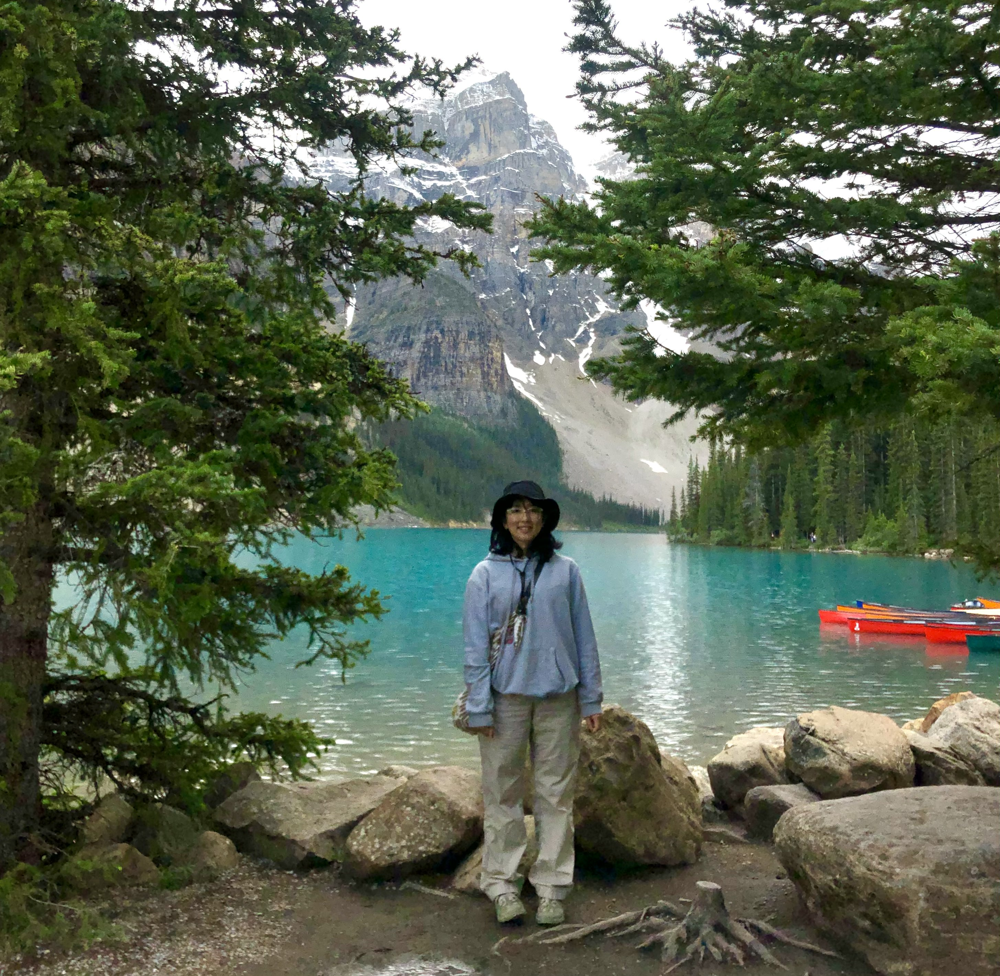

☽˚ ˚ ｡✩ ˚ About Me,Mi ˚ ✩ ｡˚ ˚☽
I'm Bhumika (Mi), a biology student with a deep passion for the intricacies of life. I find joy in observing the world around me, discovering new perspectives in the seemingly mundane, and expressing my creativity.
Stories captivate me and I aspire to be a storyteller one day !
Stories captivate me and I aspire to be a storyteller one day !
